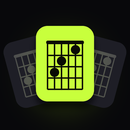

Chord FinderHelp & support
Can't find your answer? Send us a message (a free GitHub account is needed) and we'll reply as soon as we can.
Frequently asked questions
Any audio or video file you have on your iPhone: voice memos, recordings, songs you bought as files, videos from Photos. Songs from streaming apps like Apple Music and Spotify are copy-protected and can't be opened. You can still tap Listen while they play on another speaker.
In Voice Memos, tap ••• on the recording → Share → Chord Finder. Or in Chord Finder tap Audio file and pick it in Files.
Chord Finder finds the main chords of most pop, rock, folk and singer-songwriter songs reliably. Dense jazz harmony and heavily distorted guitars are harder; turn on Simple chords in Settings for plain major and minor chords.
Tap the Tempo box on the song screen to switch between half, normal and double time.
Chords for every bar of every song (the free plan shows the first 45 seconds), looping, speed control, transpose and capo, and sharing chord sheets. Live Listen, key and tempo are free.
Cancel in iPhone Settings → your name → Subscriptions. To restore on a new iPhone, open Chord Finder → Settings → Restore purchases.
No. Everything is analyzed on your iPhone. See the privacy policy.